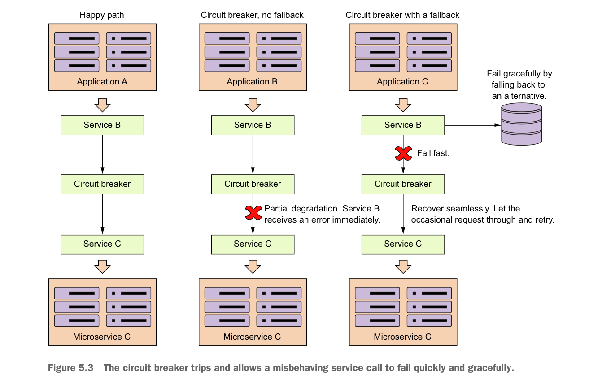

Circuit breaker đóng vai trò như một trung gian giữa ứng dụng và dịch vụ từ xa. Trong kịch bản trước đó, một triển khai circuit breaker có thể đã bảo vệ các Ứng dụng A, B và C khỏi việc sập hoàn toàn.
Trong hình 5.3, Service B (client) sẽ không bao giờ gọi trực tiếp Service C. Thay vào đó, khi cuộc gọi được thực hiện, Service B sẽ ủy quyền việc gọi dịch vụ thực tế cho circuit breaker, circuit breaker sẽ nhận cuộc gọi và bọc nó trong một thread (thường được quản lý bởi thread pool) độc lập với bên gọi ban đầu. Bằng cách bọc cuộc gọi trong một thread, client không còn phải chờ trực tiếp cho cuộc gọi hoàn tất. Thay vào đó, circuit breaker theo dõi thread và có thể hủy cuộc gọi nếu thread chạy quá lâu.
Hình 5.3 trình bày ba kịch bản. Trong kịch bản đầu tiên, happy path, circuit breaker sẽ duy trì một bộ đếm thời gian và nếu cuộc gọi tới dịch vụ từ xa hoàn tất trước khi bộ đếm thời gian hết hạn, mọi thứ đều ổn và Service B có thể tiếp tục công việc của mình. Trong kịch bản suy giảm một phần (partial degradation), Service B sẽ gọi Service C thông qua circuit breaker. Lần này, Service C đang chạy chậm và circuit breaker sẽ hủy kết nối tới dịch vụ từ xa nếu cuộc gọi không hoàn tất trước khi bộ đếm thời gian trên thread do circuit breaker duy trì hết hạn.

Circuit breaker kích hoạt và cho phép cuộc gọi dịch vụ hoạt động sai lệch thất bại nhanh chóng và êm áo.